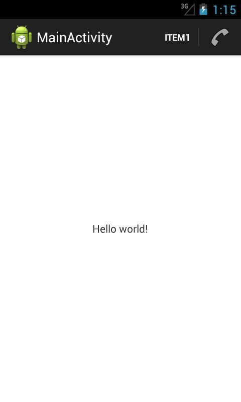
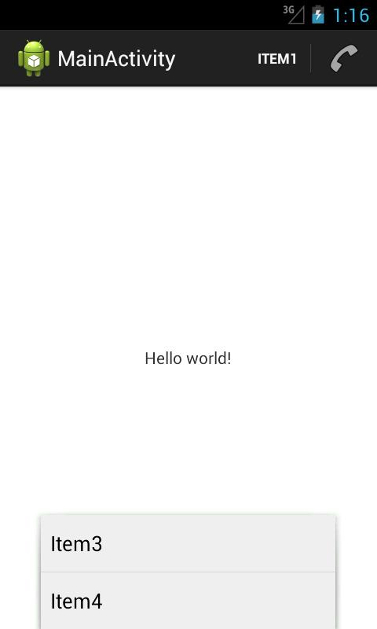
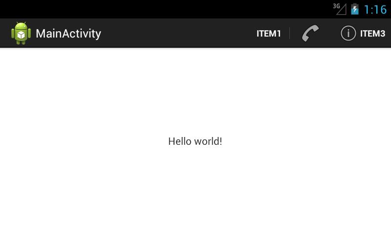
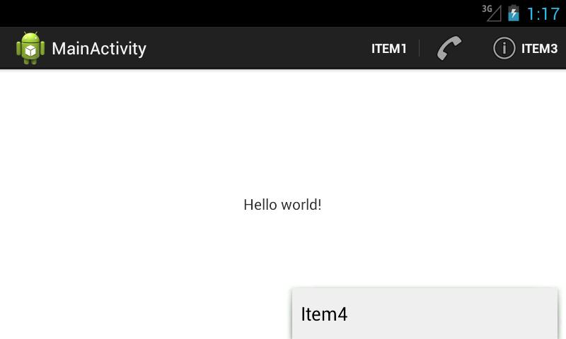
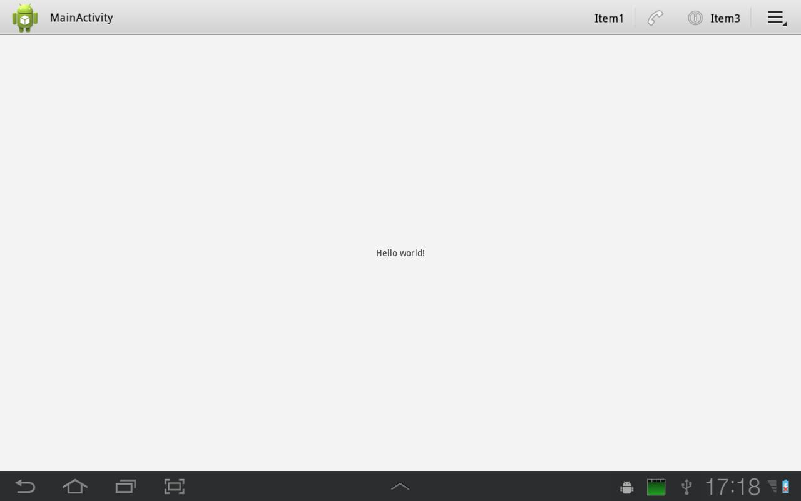
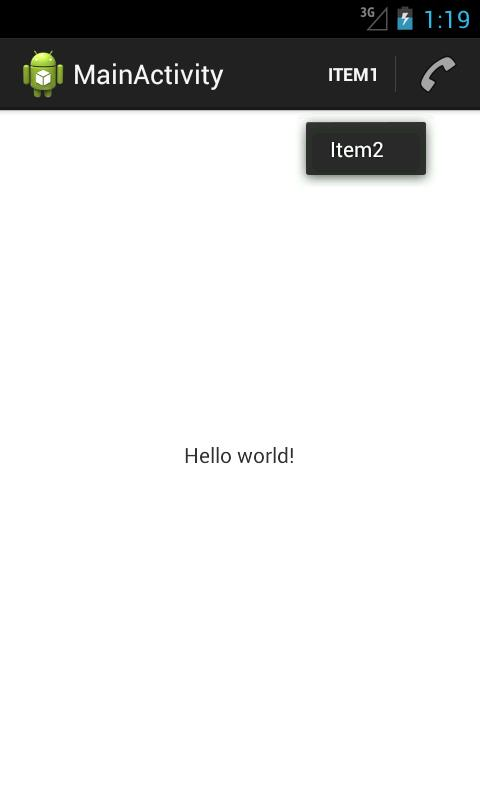
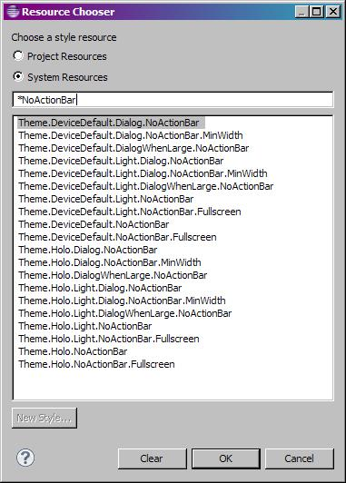
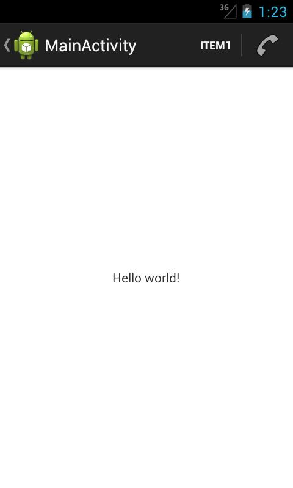

В этом уроке:
- размещаем элементы в ActionBar
Еще одно нововведение третьего Андроида – Action Bar. Это панель в верхней части приложения.
В этом уроке попробуем размещать там свои элементы с иконками и посмотрим, как с ними взаимодействовать. Тут нам все уже будет знакомо, т.к. используется механизм, который раньше строил меню. Т.е. мы в методе onCreateOptionsMenu получаем на вход объект Menu и (программно или с помощью XML) наполняем его элементами.
Для элементов будем указывать id, текст, иконку и режим показа.
Создадим проект:
Project name: P1071_ActionBarItems
Build Target: Android 4.1
Application name: ActionBarItems
Package name: ru.startandroid.develop.p1071actionbaritems
Create Activity: MainActivity
В strings.xml добавим строки:
<string name="item1">Item1</string>
<string name="item2">Item2</string>
<string name="item3">Item3</string>
<string name="item4">Item4</string>В файл res\menu\main.xml напишем следующий текст:
<?xml version="1.0" encoding="utf-8"?>
<menu
xmlns:android="http://schemas.android.com/apk/res/android">
<item
android:id="@+id/item1"
android:showAsAction="always"
android:title="@string/item1">
</item>
<item
android:id="@+id/item2"
android:icon="@android:drawable/ic_menu_call"
android:showAsAction="ifRoom"
android:title="@string/item2">
</item>
<item
android:id="@+id/item3"
android:icon="@android:drawableandroidandroidandroidandroiddrawableandroidandroidandroidandroid/ic_menu_info_details"
android:showAsAction="ifRoom|withText"
android:title="@string/item3">
</item>
<item
android:id="@+id/item4"
android:icon="@android:drawable/ic_menu_view"
android:showAsAction="never"
android:title="@string/item4">
</item>
</menu>С id, title и icon, думаю все понятно – это идентификатор, текст и иконка элемента. Иконки системные, выбранные случайно.
Нам тут больше интересен атрибут showAsAction, это режим показа элемента. Он может принимать значения:
never – не показывать элемент
ifRoom – показывать, если есть место
always – всегда показывать
К этим значениям может быть добавлено еще одно – withText. Актуально для элементов с указанной иконкой. В этом случае для элемента будет показана не только иконка, но и текст из title.
Кодим MainActivity.java:
package ru.startandroid.develop.p1071actionbaritems;
import android.app.Activity;
import android.os.Bundle;
import android.view.Menu;
public class MainActivity extends Activity {
@Override
public void onCreate(Bundle savedInstanceState) {
super.onCreate(savedInstanceState);
setContentView(R.layout.main);
}
@Override
public boolean onCreateOptionsMenu(Menu menu) {
getMenuInflater().inflate(R.menu.main, menu);
return true;
}
}Думаю, комментарии тут особо не нужны. Все знакомое. Заполненный нами ранее xml-файл используется для создания элементов Menu.
Все сохраняем, запускаем приложение.
Отобразился item1 и item2.

Для item1 мы не указывали иконку, поэтому видим только текст. А в showAsAction мы указали always, т.е. система будет пытаться отобразить элемент, даже если не хватает места на ActionBar.
Для item2 мы указали иконку ic_menu_call, ее и видим в ActionBar. В showAsAction мы указали ifRoom, т.е. отображать, если есть свободное место. Место есть – элемент виден.
Жмем на эмуляторе menu и видим два оставшихся элемента. Они не отобразились в ActionBar и теперь доступны только так.

item3 не отобразился, т.к. ему не хватило места. Мы для него указывали showAsAction = ifRoom, т.е. отображать, если есть где. Для item2 место нашлось, а вот item3 не влез.
item4 не отобразился, т.к. мы указали showAsAction = never.
Давайте увеличим место в ActionBar и посмотрим, что изменится. Для этого просто повернем экран в горизонтальную ориентацию – CTRL+F12.

Для item1 и item2 ничего не изменилось. А вот для item3 теперь появилось местечко, и он вылез. Если для item2 отображена только иконка, то для item3 мы видим и текст. Это сказывается withText в атрибуте showAsAction.
item4 не виден несмотря на то, что есть куча места свободного. Причина - never в атрибуте showAsAction. Чтоб добраться до него, жмем menu.

overflow menu
Если запустить это же приложение на планшете, то увидим чуть другой интерфейс ActionBar:

Справа появляется кнопка, нажатие на которую аналогично нажатию на menu. Судя по всему, эта кнопка видна только на тех устройствах, на которых нет кнопки menu.
Как узнать текст элемента, если видна только иконка
Если для элемента показана только иконка, то долгим нажатием на нее можно добиться показа текста. Попробуем на item2:

На AVD с 4.1 это работает. На планшете с 3.2 – почему-то нет.
Как отключить ActionBar
Для этого в коде можно прописать:
getActionBar().hide();Либо выбрать для Activity тему, содержащую текст NoActionBar.

Где обрабатывать нажатия на элементы
Там же, где и при работе с меню – метод onOptionsItemSelected. Все аналогично.
О кнопке Home
В левой части ActionBar находится кнопка Home. По умолчанию для нее используется иконка приложения или Activity. Мы можем поставить сюда свою иконку, не трогая текущие. Для этого используется атрибут android:logo у Activity или Application.
В третьем Андроиде кнопка Home кликабельна по умолчанию. В четвертом же ее надо явно задействовать методом setHomeButtonEnabled.
Поймать нажатие кнопки Home можно также в onOptionsItemSelected. Она имеет id = android.R.id.home.
Насколько я понял по документацие, назначение этой кнопки – перейти в коренное Activity программы, т.е. действительно кнопка «Домой». Также документация говорит об еще одной логической возможности использования – как кнопка «Вверх». Т.е. не в корневое Activity, а на один логический уровень вверх. Например, из чтения письма переходим к списку писем. А для того, чтобы пользователь знал, что он попадет не Домой, а Вверх предлагается вешать на кнопку стрелочку методом setDisplayHomeAsUpEnabled.
В итоге выглядит это примерно так

На кнопке появилась стрелка.
Надо понимать, что эта стрелка – это просто изображение для пользователя, чтобы он знал, какое поведение ожидать от нажатия. А писать весь процесс перехода Вверх надо самим. Как впрочем и процесс перехода Домой.
Напоследок еще несколько полезных методов для ActionBar:
setTitle – установить свой заголовок
setSubtitle - установить свой подзаголовок
setDisplayShowTitleEnabled – скрыть/показать заголовок и подзаголовок
setDisplayShowHomeEnabled – скрыть/показать кнопку Home